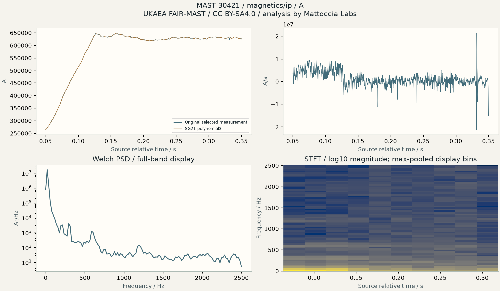
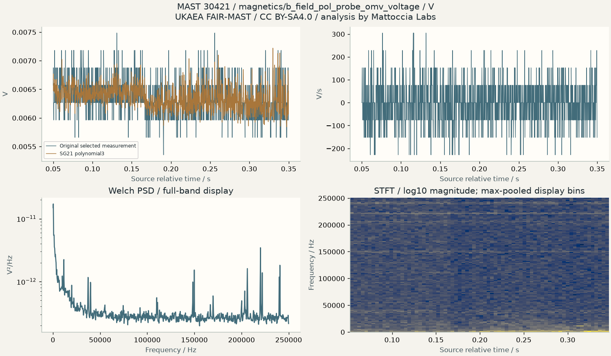
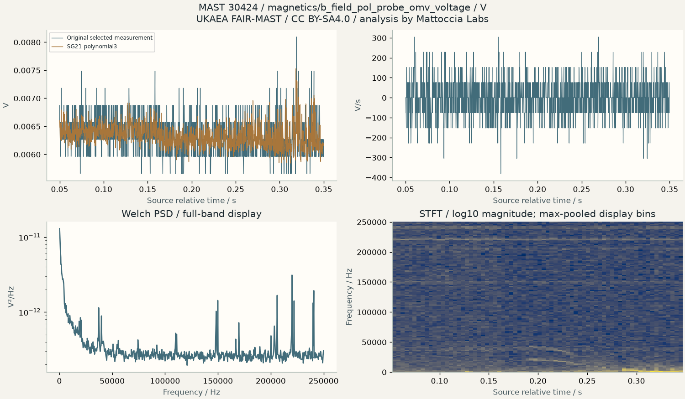
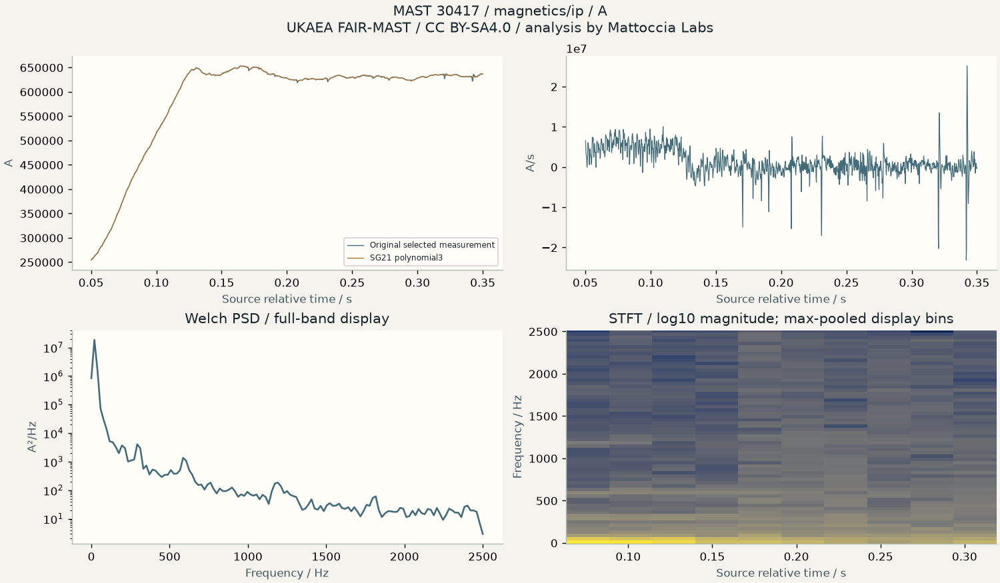
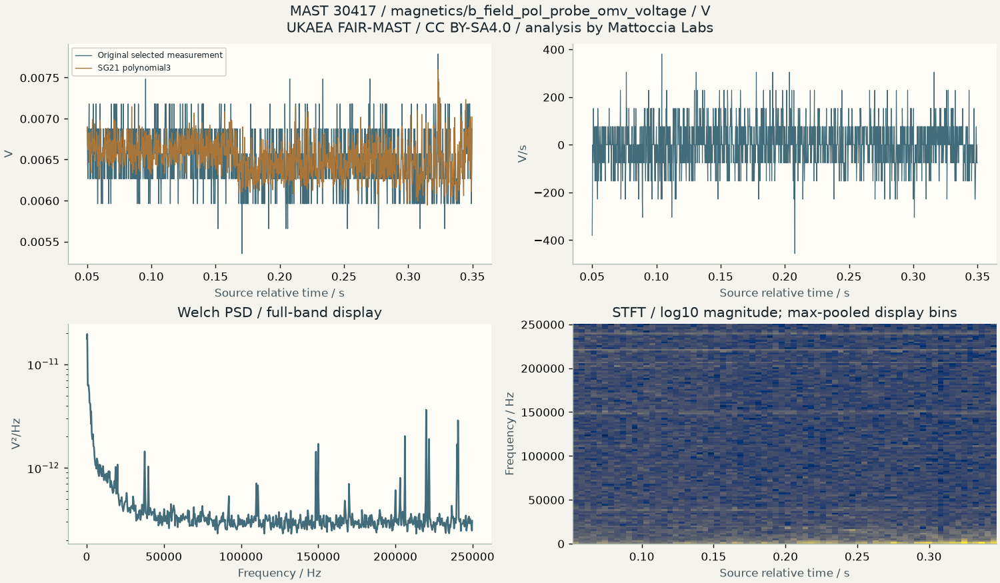
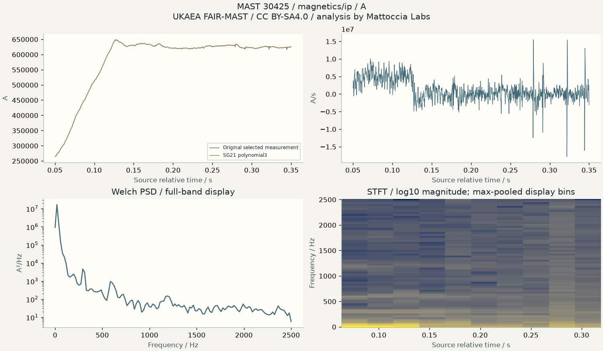
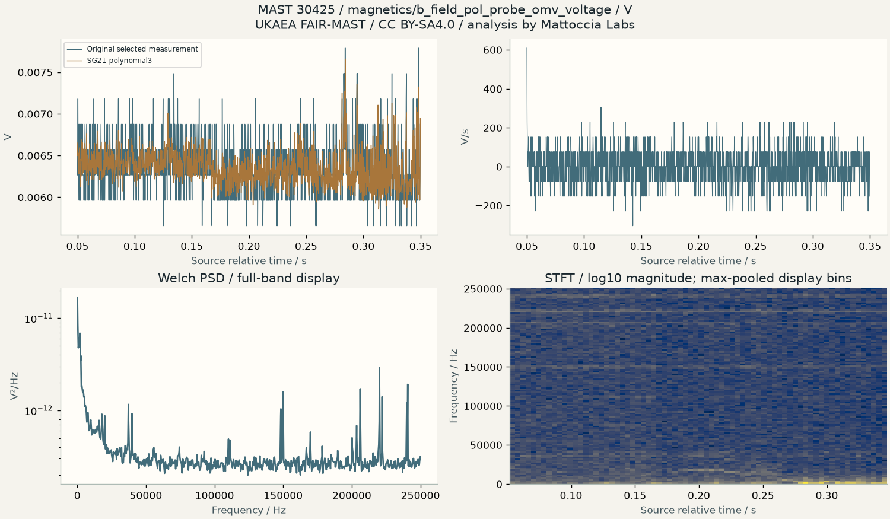
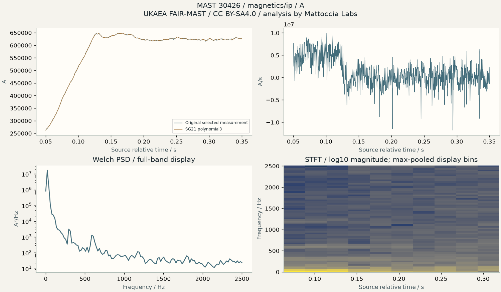

Methods and all parameters are in the accompanying METHODOLOGY and manifest. Originals and transformed displays remain distinct. Units and unknown calibrations are explicit.
Verified quantitative findings
MCF-01 / DERIVED
Coverage and quality of comparable MAST diagnostics
Catalog selection fixed before values; explicit unit conversion and finite/regular-sampling checks
Uncertainty: Observed cross-shot dispersion and method sensitivity; small selected cohort, not population inference
Limits: Differences may reflect unmeasured experimental settings or processing; no causal plasma conclusion.
Measurements and comparisons
Shot
Diagnostic
N / valid
Unit
RMS
Peak / Hz
Resolution / Hz
Events
30421
magnetics/ip
1500 / 1500
A
592831.2924338278
19.53125000000215
19.53125000000215
1
30421
magnetics/b_field_pol_probe_omv_voltage
150000 / 150000
V
0.006361044050117094
366.21093749963376
122.07031249987791
0
30424
magnetics/ip
1500 / 1500
A
591866.5020935973
19.53125000000215
19.53125000000215
2
30424
magnetics/b_field_pol_probe_omv_voltage
150000 / 150000
V
0.006344997549364238
244.14062499975583
122.07031249987791
0
30417
magnetics/ip
1500 / 1500
A
595148.1644974579
19.53125000000215
19.53125000000215
5
30417
magnetics/b_field_pol_probe_omv_voltage
150000 / 150000
V
0.006528670436586266
366.21093749963376
122.07031249987791
1
30425
magnetics/ip
1500 / 1500
A
589717.8580495752
19.53125000000215
19.53125000000215
3
30425
magnetics/b_field_pol_probe_omv_voltage
150000 / 150000
V
0.006353864079767064
122.07031249987791
122.07031249987791
0
30426
magnetics/ip
1500 / 1500
A
591115.2138045023
19.53125000000215
19.53125000000215
0
30426
magnetics/b_field_pol_probe_omv_voltage
150000 / 150000
V
0.0063830213630413895
366.21093749963376
122.07031249987791
0
Original scientific visualizations

MAST 30421 / magnetics/ip / A; quality/segment/filter parameters in JSON. Signal-processing features are not identified plasma modes.

MAST 30421 / magnetics/b_field_pol_probe_omv_voltage / V; quality/segment/filter parameters in JSON. Signal-processing features are not identified plasma modes.MAST 30424 / magnetics/ip / A; quality/segment/filter parameters in JSON. Signal-processing features are not identified plasma modes.

MAST 30424 / magnetics/b_field_pol_probe_omv_voltage / V; quality/segment/filter parameters in JSON. Signal-processing features are not identified plasma modes.

MAST 30417 / magnetics/ip / A; quality/segment/filter parameters in JSON. Signal-processing features are not identified plasma modes.

MAST 30417 / magnetics/b_field_pol_probe_omv_voltage / V; quality/segment/filter parameters in JSON. Signal-processing features are not identified plasma modes.

MAST 30425 / magnetics/ip / A; quality/segment/filter parameters in JSON. Signal-processing features are not identified plasma modes.

MAST 30425 / magnetics/b_field_pol_probe_omv_voltage / V; quality/segment/filter parameters in JSON. Signal-processing features are not identified plasma modes.

MAST 30426 / magnetics/ip / A; quality/segment/filter parameters in JSON. Signal-processing features are not identified plasma modes.MAST 30426 / magnetics/b_field_pol_probe_omv_voltage / V; quality/segment/filter parameters in JSON. Signal-processing features are not identified plasma modes.
Uncertainty, discussion and limitations
Legacy mastapp JSON service timed out; current official documentation points to the public S3 Parquet catalogs actually used.
Level2 magnetics metadata identifies source ingestion commit/release; a processed diagnostic is not a direct equilibrium reconstruction.
No interpolation, missing-to-zero conversion or sorting of bad time axes; spectral analysis uses declared contiguous segments.
Sample deliberately matches catalog categories, not all physical operating conditions; no cross-shot phase alignment.
Source release documents ongoing corrections; quality metrics and source-version metadata accompany every result.
No new instability, confinement improvement, disruption forecast, physical law or causal effect established.
Statistical block intervals and discretization/sensitivity do not quantify unknown instrument/calibration systematics.
Validation and conclusions
Algorithm controls, independent numerical checks and exact acquired-source replay accompany publication. These are reproducible descriptions of selected real data, not a new plasma law, named instability, ignition result or validated prediction.
Original software: Apache2.0. Data-derived scientific report, plots and selected measurements: CC-BY-SA-4.0. Source attribution and modifications: acquired source arrays, unit normalization, explicit selections, deterministic statistics and labeled display scaling by Mattoccia Labs; no source endorsement.
# Reproduce FPE-001
From the original source release, on qualified macOS Apple Silicon/Python3.12:
```sh
python3.12 scripts/setup_fusion.py
.venv-fpre/bin/python -m fusion.cli run --experiment FPE-001 --data .local/fusion
.venv-fpre/bin/python -m fusion.cli reproduce --experiment FPE-001 --job JOB_ID --data .local/fusion
```
Initial run acquires official data explicitly. Keep source responses and manifest. Reproduce rehashes original bytes and recomputes without network; missing or modified source objects cause a visible failure. Upstream may replace Zarr objects at the same URL, so fresh acquisition is not automatically the original version. A qualified selected-input public replay is separately labeled; it cannot replace full raw-source validation. No model, apparatus access or cloud is required. Other operating systems are not qualified.